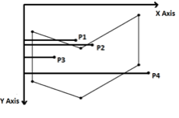
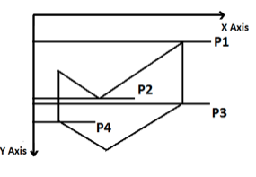

Even Odd Method:
-
Even–odd method basically works on the principle that calculates the number of intersection with the polygon edges. If the numbers of intersections are odd then the point is inside the polygon i.e. seed point. If the numbers of intersections are even then the point is outside the polygon.
-
To check whether the point is inside the polygon, we have to draw the line segment from the point P(x, y) to the Point P’(0,y) (i.e. minimum x coordinate keeping the same y value). If it intersects the edge of the polygon, then count the intersection.

As shown in the figure above for the point P1 and P4, the line segment from point P1 and point P4 to point (0,y) produces two number of intersections for point P1, point P4. The number of intersections is Even which indicate that, the point P1 and point P4 are outside the polygon.
-
Similarly, for the point P2 and P3, the line segment from point P2 and point P3 to point (0,y) produces 3 number of intersections for point P2 and 1 number of intersection for point P3. The number of intersections (3,1) are Odd. Odd number of intersection for point P2 ( 3 intersections) and point P3 ( 1 intersection) indicates that, the point P2 and point P3 are inside the polygon.
-
Now if the point of intersection is at the vertex as shown in figure below, then the number of intersection counted will be decided by the other end point of the edge, being intersected.

-
Consider the point P1; the line from point P1 to (0, y) intersects two edges of the polygon. The other end points of the two edges being intersected, lies toward a single side of the line joining point P1 and (0, y). So we will consider 2 numbers of intersections at the vertex. As the number of intersection is even (2); so the point P1 is outside the polygon.
-
Similarly, for the point P2; the line from point P2 to (0, y) intersects three edges of the polygon. One intersection is at the vertex and other is not at vertex. The other end points of the two edges, being intersected at the vertex, lies toward a single side of the line joining point P2 and (0,y). So we will consider 2 numbers of intersections at the vertex. These two intersections and one intersection of the third edge make the total number of intersections as 3. As the number of intersection is odd (3); so the point P2 is inside the polygon.
-
Similarly, for the point P3; the line from point P3 to (0, y) intersects three edges of the polygon. One intersection is at the vertex and other is not at vertex. The other end points of the two edges, being intersected at the vertex, lies toward opposite side of the line joining point P3 and (0,y). So we will consider 1 number of intersections at the vertex. This intersection and one intersection of the third edge make the total number of intersections as 2. As the number of intersection is even (2); so the point P3 is outside the polygon.
-
Similarly, for the point P4; the intersection is at the vertex. The other end points of the two edges, being intersected at the vertex, lies toward opposite side of the line joining point P4 and (0,y). So we will consider 1 number of intersections at the vertex. As the number of intersection is odd (1); so the point P4 is inside the polygon.